DandyHacks is an annual hackathon that is held by the University of Rochester. It is open to all students in the Rochester area, including high school students, and takes place over three consecutive days in October. It works like a traditional Hackathon
in which participants can work on any project they choose while being considered for prizes. On the final day, participants present their projects to a panel of judges, who then announce the winners of all the prizes.
The hackathon has a different theme each year, and features the same few illustrations, including a fox, groundhog, and Rush Rhees library. DandyHacks is designed to be an inclusive and inspiring environment where participants can share ideas and learn
from each other.
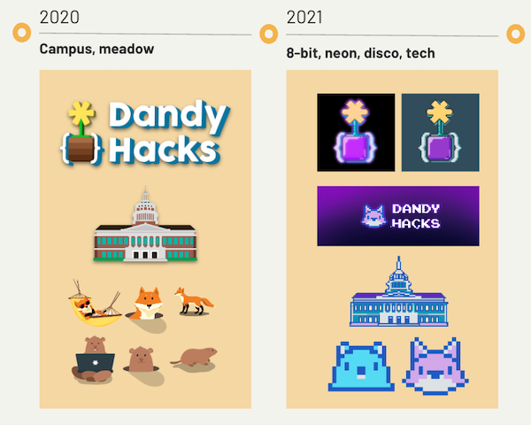
Past DandyHacks Themes
Goals
To design an inclusive and welcoming brand identity, and to create a supportive and welcoming environment for all attendees, regardless of their programming experience or level of expertise.
Audience
Non-programmers and hackathon newcomers who may be unsure if they should participate due to their skill level.
Roles & Responsibilities
As part of the Marketing Team, our responsibilities included creating marketing materials such as illustrations, fonts, and color schemes, as well as designing posters and promoting DandyHacks on social media. We were also responsible for announcing events
and activities related to the hackathon.
Brainstorming Theme Ideas Part 1
Jan 2022-April 2022
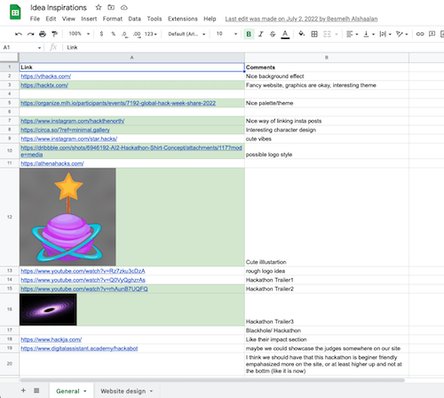
Theme Ideation
We began by brainstorming possible themes for DandyHacks. We drew inspiration from other hackathons, websites, and DandyHacks itself. We compiled snippets and screenshots of our ideas onto a spreadsheet in order to organize them and reach a consensus
on what we liked and disliked.
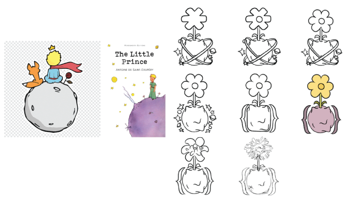
Theme Idea 1 and Logo Sketches
After considering various options, we ultimately chose a theme inspired by "The Little Prince." This classic story has themes that align well with DandyHacks, such as the fox character and the message of hope and otherworldliness.
Next, we moved on to ideating different logo designs. Using Procreate, I was responsible for sketching several logo options. While we wanted to add a unique twist to the design using "The Little Prince" themes, we also wanted to stay true to our brand.
Therefore, we tried to recreate our recognizable logo, a dandelion held between two brackets, while incorporating elements from "The Little Prince."
Brainstorming Theme Ideas Part 2
Jan 2022-April 2022
However, as we moved forward with the "The Little Prince" theme, we realized that it was limiting our creativity by imposing a specific plot and set of characters. Additionally, the theme presented challenges such as a distinct and challenging color scheme
and difficulties in incorporating DandyHacks' characters into the "The Little Prince" universe. As a result, we made the decision to switch to our second choice: a vintage animation theme. This change allowed us to have more flexibility and
freedom in our design choices.
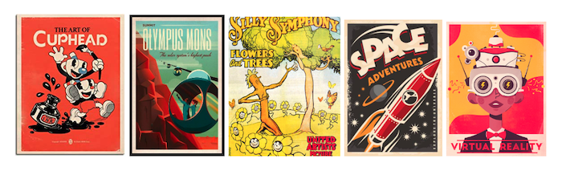
Vintage Animation Inspiration
Vintage animation, also known as rubber hose animation, was a popular animation style in the 1930s. One of the main reasons we were attracted to this theme was the opportunity to transform our plain animal illustrations into anthropomorphic characters,
creating a more friendly brand image. We were heavily inspired by the game Cuphead and older movies like Silly Symphony when designing this theme.
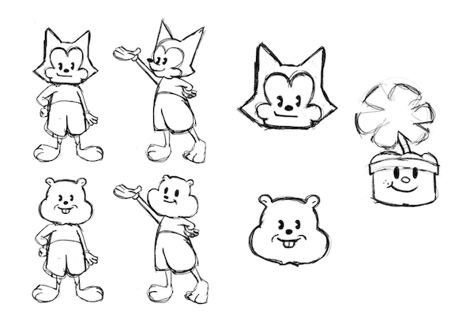
Mascot Sketches
I was responsible for redesigning our illustration pack to fit the new rubbber hose animation style. This included revamping the fox and groundhog characters. I used the rubber hose animated characters as a reference to sketch out new versions
of our mascots that were vastly different from their previous designs.
Vectorizing Illustrations
June 2022-Aug 2022
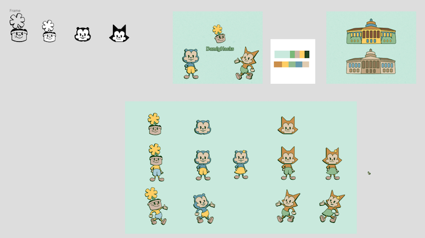
Illustration Pack in Figma
After sketching out illustration ideas, I was responsible for converting them into easily distributable formats such as vectors. To do this, I used the pen tool in Figma to outline the sketches. I also experimented with coloring using the warm, earthy
palette that we had decided upon.
Deploying Our Designs
Sep 2022-Oct 2022
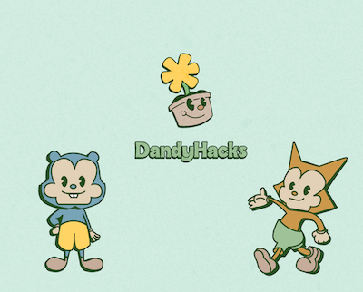
Final Brand Design
Once we completed our illustration pack, logo, and font packs, we were ready to share our designs with our audience. We scheduled all the necessary posts in our social media feed and assigned tasks for designing each post to different team members.
I was responsible for four of these posts. Our current social media feed looks like this.
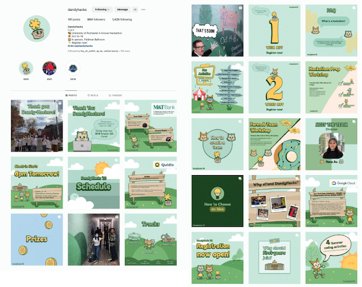
Instagram Feed
We also worked to regularly reach out to other organizations and students to further market our event. Our designs were not only spread online, but also put on promotional material like stickers and clothing items.
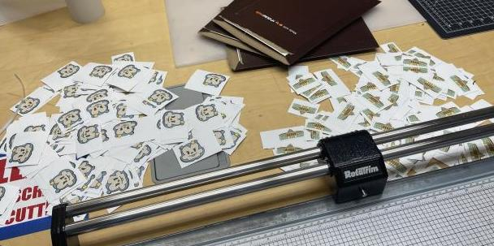
Stickers!!
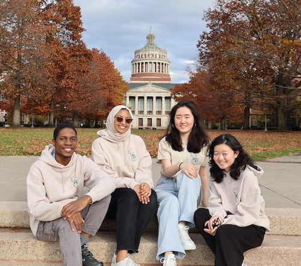
The Team and our Swag (with me on the far right)
Wrapping Up
Oct 2022
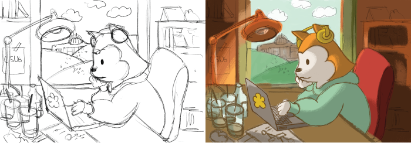
Lofi Background Sketch and Final
As a final touch to the final event's atmosphere, we created a cute lofi background inspired by lofi girl on YouTube, to complement the calming lofi music that would be played. Above is the sketch and final background, and below is a peek as to what it
looked like at the event!
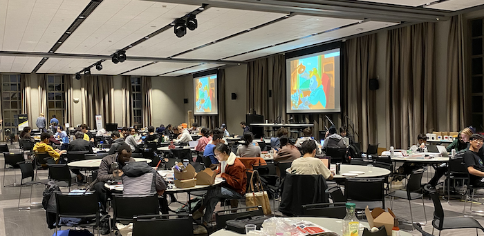
DandyHacks Event (with Lofi in the background)